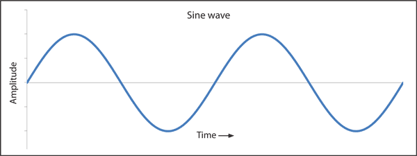
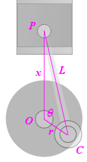

Many compression algorithms, like JPEG use fourier transforms that rely on sin and cos.
Surveying, navigation and astronomy all rely on sin and cos for the position of objects and other calculations.
Music is composed of waves of different frequencies and amplitudes and these can be described using sin/cos. In fact most anything involving sound waves will rely on sin/cos.
Ballistic trajectories rely on sin/cos, and there are numerous other uses of them in physics.
In this model we would like to examine how sinusoidal movement is manifested in everyday life.
Sinusoid is a mathematical curve that describes a smooth repetitive oscillation.
It is named after the function sine, of which it is the graph.
It occurs often in pure and applied mathematics, as well as physics, engineering, signal processing and many other fields.

The motion of the piston on the cylinder path is similar to the sinusoidal wave,
if the radius is smaller than the length of the rod connecting the piston and the cylinder.
We will mark the parameters of the piston:

`L` is the length of the rod
`x` is the distance from the center of the crank (`O`) and the piston pin (`P`).
`r` is the distance `OC`.
`theta` is the angle `/_POC`.
Now, using the Cosine Rule from basic trigonometry, we have:
`L^2 = r^2 + x^2 - 2rx cos(theta)`
Solving this for `x`, and using the fact `cos^2 theta = 1 - sin^2 theta`, we get the following, which is the equation for the movement of a piston driven by a circular crank:
`x=rcosA+sqrt(L^2-r^2sin^2 theta)`
We can see from this last equation that if `L` is large compared to `r`,
the expression under the square root becomes close to `sqrt(L^2) = L` (a constant), and the motion will be close to `x=rcosA+L`, which is sinusoidal.
Use the slider to change the amplitude and rod lentgh.
notice that the fixed wave is pure sinusidel wave.
See how the connection between the radius and the rod affects the movement of the plunger.
In addition, the model shows one of the significant applications of the integral, ie the calculation of the area under the graph. Move the red dot to see how the Calculated area changes, or press start to let the space change dynamically.